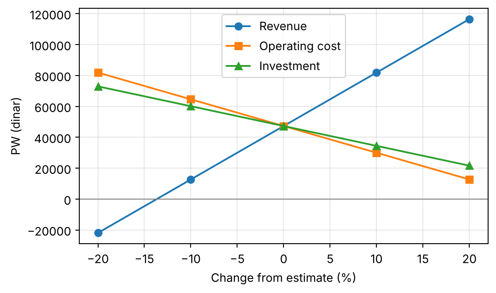

في الفصول السابقة كانت التدفقات معطاة: تكلفة في البداية، ودخل كل سنة. في الواقع لا أحد يعطيك هذه الأرقام جاهزة. عليك أن تبنيها من معلومات متفرقة: سعر الآلة، والمبيعات المتوقعة، وتكاليف التشغيل، والاستهلاك، والضريبة، والمخزون، والقرض. هذا الفصل يجمع الفصول الخامس والسادس مع الثالث والرابع: نبني جدول التدفقات النقدية للمشروع بعد الضريبة، خطوة بخطوة، ثم نقيمه بالقيمة الحالية والمعدل.
نبدأ بمشروع بسيط جدا لثلاث سنوات، ثم نضيف في كل مثال عنصرا واحدا.
7.1 ثلاثة أنواع من التدفقات
الاستثمار: شراء الأصول في البداية، وبيعها في النهاية، ورأس المال العامل.
التشغيل: الإيرادات والتكاليف والضريبة خلال عمر المشروع.
التمويل: القروض وأقساطها وفوائدها.
مثال 7.1: ثلاثة أنواع من التدفقات
صنف التدفقات التالية لمشروع خط تعبئة جديد: ثمن الآلة، وإيراد المبيعات، وأجور العمال، وقرض من البنك، وقسط القرض، وفائدة القرض، وضريبة الدخل، ومخزون المواد الأولية في بداية المشروع، وبيع الآلة في النهاية.
الحل:
كل تدفق في مشروع ينتمي إلى واحد من ثلاثة أنواع:
التدفق
النوع
ثمن الآلة
استثمار
مخزون المواد الأولية
استثمار في رأس المال العامل
بيع الآلة في النهاية
استثمار، لكنه يعود
إيراد المبيعات
تشغيل
أجور العمال
تشغيل
ضريبة الدخل
تشغيل
القرض
تمويل
أصل القسط
تمويل
فائدة القرض
تمويل، لكنها تخفض الضريبة
هذا التقسيم يرتب العمل: نحسب التدفقات التشغيلية من قائمة الدخل، ونضيف تدفقات الاستثمار في السنة 0 وفي النهاية، ثم ندرس التمويل وحده في آخر الفصل.
7.2 التدفق النقدي التشغيلي
نحسبه من قائمة الدخل: صافي الربح زائد الاستهلاك. أو بصيغة واحدة:
تبقى افتراضات الفصل الخامس نفسها: الشركة رابحة من مجمل أعمالها وتستفيد من الوفر الضريبي في نفس السنة، والضريبة تدفع في سنة الدخل.
مثال 7.2: التدفق النقدي التشغيلي لسنة واحدة
مشروع إيراده السنوي 90,000 دينار، وتكاليف تشغيله 40,000 دينار. معداته تكلف 75,000 دينار وتستهلك بالقسط الثابت على 5 سنوات. نسبة الضريبة 20%. ما التدفق النقدي التشغيلي في سنة واحدة؟
الحل:
نبني قائمة الدخل كما في الفصل الخامس:
البند
المبلغ
الإيراد
90,000.00
تكاليف التشغيل
-40,000.00
الاستهلاك
-15,000.00
الدخل الخاضع للضريبة
35,000.00
الضريبة
-7,000.00
صافي الربح
28,000.00
نضيف الاستهلاك
15,000.00
التدفق التشغيلي
43,000.00
نضيف الاستهلاك لأنه طرح ليحسب الضريبة فقط، ولم يخرج نقدا. نفس النتيجة بصيغة واحدة:
لمن يريد أن يستزيد: قائمة الدخل وقائمة التدفقات النقدية للشركة كلها، والنسب المالية، في ملحق أساسيات المحاسبة، الملحق E.
7.3 بناء الجدول خطوة بخطوة
الجدول له عمود لكل سنة، وسطر لكل بند. نبدأ بأبسط مشروع.
مثال 7.3: أول جدول كامل: مشروع لثلاث سنوات
آلة تكلف 60,000 دينار، وتعطي إيرادا 55,000 دينار سنويا، بتكاليف تشغيل 25,000 دينار، لمدة 3 سنوات. تستهلك بالقسط الثابت بدون قيمة بيع. نسبة الضريبة 20%، والحد الأدنى للعائد بعد الضريبة 12%. ابن جدول التدفقات، واحسب القيمة الحالية.
الحل:
الاستهلاك 20,000.00 دينار كل سنة.
البند
السنة 0
السنة 1
السنة 2
السنة 3
الإيراد
55,000
55,000
55,000
التشغيل
-25,000
-25,000
-25,000
الاستهلاك
-20,000
-20,000
-20,000
الدخل الخاضع
10,000
10,000
10,000
الضريبة
-2,000
-2,000
-2,000
صافي الربح
8,000
8,000
8,000
الاستهلاك يضاف
20,000
20,000
20,000
الاستثمار
-60,000
صافي التدفق
-60,000
28,000
28,000
28,000
المشروع مقبول بعد الضريبة. الجدول طويل، لكن كل سطر فيه بسيط. هذا هو الشكل الذي ستبني عليه كل مشاريع الفصل.
نضيف الآن قيمة البيع في النهاية. إذا بيع الأصل بأكثر من قيمته الدفترية، تؤخذ ضريبة على الفرق، كما في الفصل الخامس:
مثال 7.4: إضافة قيمة البيع في النهاية
للمشروع السابق، تبين أن الآلة تباع في نهاية السنة 3 بمبلغ 15,000 دينار. استهلاكها الضريبي بقي على 3 سنوات بدون قيمة بيع. كيف يتغير الجدول والقيمة الحالية؟
الحل:
القيمة الدفترية في نهاية السنة 3 صفر، لأن الآلة استهلكت كاملة. فكل ثمن البيع ربح يخضع للضريبة:
صافي البيع:
نضيف سطرا في جدول السنة 3 بصافي البيع. التدفق التشغيلي لم يتغير، 28,000.00 دينار سنويا.
ثم رأس المال العامل: المخزون والذمم المدينة والنقد التشغيلي. يخرج في البداية، ويعود في النهاية، ولا يخضع للضريبة.
مثال 7.5: إضافة رأس المال العامل
للمشروع السابق، يحتاج خط الإنتاج مخزونا من المواد الأولية والعبوات بقيمة 10,000 دينار في البداية، ويسترد هذا المخزون كاملا في النهاية. ما أثره على القيمة الحالية؟
الحل:
المخزون ليس مصروفا، فلا يطرح من الدخل ولا يخفض الضريبة. لكنه مال محبوس في المشروع طوال عمره. يسمى رأس المال العامل. يدخل في السنة 0 كاستثمار، ويعود في السنة الأخيرة.
السنة 0
السنة 1
السنة 2
السنة 3
الآلة
-60,000
رأس المال العامل
-10,000
10,000
التدفق التشغيلي
28,000
28,000
28,000
صافي البيع
12,000
صافي التدفق
-70,000
28,000
28,000
50,000
بدون رأس المال العامل كانت 15,792.64 دينار. الفرق 2,882.20 دينار، وهو تكلفة حبس المال ثلاث سنوات: يخرج اليوم ويعود بنفس القيمة الاسمية، لكن قيمته الحالية أقل.
الآن مشروع كامل يجمع كل العناصر، بخطوات ثابتة تصلح لأي مشروع:
احسب الاستهلاك لكل سنة.
احسب التدفق التشغيلي لكل سنة.
احسب صافي البيع في النهاية.
ضع الاستثمار ورأس المال العامل في السنة 0، واسترداد رأس المال العامل في النهاية.
اجمع كل عمود، ثم احسب القيمة الحالية والمعدل.
مثال 7.6: مشروع كامل لخمس سنوات
مصنع يدرس خطا جديدا يكلف 150,000 دينار، ويحتاج رأس مال عامل 15,000 دينار. الإيراد 120,000 دينار سنويا، والتكاليف 60,000 دينار، لمدة 5 سنوات. الاستهلاك بالقسط الثابت على 5 سنوات بدون قيمة بيع، لكن الخط يباع فعلا بمبلغ 20,000 دينار في النهاية. نسبة الضريبة 20%، والحد الأدنى للعائد بعد الضريبة 12%. احسب القيمة الحالية والمعدل.
الحل:
نطبق نفس الخطوات:
الخطوة 1: الاستهلاك.
الخطوة 2: التدفق التشغيلي، نفسه كل سنة.
الخطوة 3: صافي البيع في النهاية. القيمة الدفترية صفر:
الخطوة 4: الجدول.
السنة
0
1
2
3
4
5
صافي التدفق
-165,000
54,000
54,000
54,000
54,000
85,000
السنة 5 تجمع التدفق التشغيلي وصافي البيع واسترداد رأس المال العامل.
الخطوة 5: التقييم.
=B1 + NPV(12%, C1:G1)
=IRR(B1:G1)
المعدل بعد الضريبة 22.29%. المشروع مقبول.
7.4 أثر طريقة الاستهلاك ورأس المال العامل المتغير
مثال 7.7: أثر طريقة الاستهلاك على المشروع
للخط السابق بدون قيمة بيع وبدون رأس مال عامل، احسب القيمة الحالية بعد الضريبة مرة بالقسط الثابت، ومرة بالمتناقص المضاعف مع التحول.
الحل:
الجزء الذي لا يتأثر بالاستهلاك نفسه في الطريقتين:
الفرق كله في الوفر الضريبي. المتناقص المضاعف لخمس سنوات: 40% ثم 24% ثم 14.4% ثم 10.8% و10.8% من الأساس.
السنة
1
2
3
4
5
القسط الثابت
30,000
30,000
30,000
30,000
30,000
المتناقص المضاعف
60,000
36,000
21,600
16,200
16,200
القيمة الحالية بالقسط الثابت 44,657.91 دينار، وبالمتناقص المضاعف 46,455.77 دينار. نفس المشروع يصبح أفضل بمقدار 1,797.86 دينار، فقط بتغيير طريقة الاستهلاك.
مثال 7.8: رأس مال عامل يتغير مع المبيعات
مشروع مبيعاته 100,000 دينار في السنة الأولى، وتنمو 10% سنويا لمدة 4 سنوات. يحتاج رأس مال عامل يساوي 15% من مبيعات كل سنة، ويجب أن يكون جاهزا في بداية السنة. ما تدفقات رأس المال العامل؟
الحل:
رصيد رأس المال العامل المطلوب لكل سنة:
السنة
المبيعات
الرصيد المطلوب
1
100,000
15,000
2
110,000
16,500
3
121,000
18,150
4
133,100
19,965
التدفق هو الزيادة في الرصيد فقط، في بداية كل سنة، أي في نهاية السنة التي قبلها:
السنة
0
1
2
3
4
تدفق رأس المال العامل
-15,000
-1,500
-1,650
-1,815
19,965
في النهاية يسترد الرصيد كله، 19,965 دينار. مجموع التدفقات صفر، لكن توقيتها يكلف المشروع.
7.5 التمويل بقرض
نقيم المشروع أولا كأن الشركة تدفع كل شيء من مالها. هذا يحكم على المشروع نفسه. ثم ندرس أثر القرض: الفائدة تطرح من الدخل الخاضع للضريبة، فتكلفة القرض الحقيقية بعد الضريبة:
هذه القاعدة تفترض أن كل الفائدة مقبولة ضريبيا، وأن الشركة رابحة فتستفيد من الوفر كاملا. بعض الدول تضع حدا لخصم الفائدة، نسبة من الربح أو من حقوق الملكية، والشركة الخاسرة لا توفر شيئا في نفس السنة. في هذه الحالات تكلفة القرض بعد الضريبة أعلى من هذه المعادلة.
مثال 7.9: تمويل المشروع بقرض
آلة تكلف 90,000 دينار، وتعطي إيرادا 70,000 بتكاليف 30,000 دينار سنويا، لمدة 3 سنوات، وتستهلك بالقسط الثابت. الشركة تقترض 60,000 دينار بفائدة 8% تسدد بأقساط سنوية متساوية، وتدفع الباقي من مالها. نسبة الضريبة 20%، والحد الأدنى للعائد على مال الشركة 12%. ما القيمة الحالية لتدفقات مال الشركة؟
الحل:
الخطوة 1: جدول القرض. القسط:
السنة
1
2
3
الفائدة
4,800
3,321
1,725
الخطوة 2: الفائدة تطرح من الدخل الخاضع للضريبة، مثل الاستهلاك. أما أصل القسط فلا يطرح.
في السنة 0 تدفع الشركة الفرق بين الثمن والقرض فقط.
بدون قرض كانت القيمة الحالية 1,269.59 دينار. القرض رفعها، لأن الفائدة 8%، والفائدة بعد الضريبة أقل منها، مقارنة بالحد الأدنى للعائد 12%.
7.6 بدائل التكاليف بعد الضريبة
كثير من القرارات لا تزيد الإيراد، بل تخفض التكاليف. التوفير يرفع الربح والضريبة، والاستهلاك يخفضها.
مثال 7.10: آلة توفر تكاليف بعد الضريبة
آلة تكلف 40,000 دينار، ولا تزيد الإيراد، لكنها توفر 14,000 دينار سنويا من الأجور لمدة 5 سنوات. تستهلك بالقسط الثابت بدون قيمة بيع. نسبة الضريبة 20%، والحد الأدنى للعائد 10%. هل تشتريها الشركة؟
مثال 7.11: مقارنة آلتين بالقيمة السنوية بعد الضريبة
الآلة أ تكلف 30,000 دينار، وتشغيلها 12,000 دينار سنويا، وعمرها 4 سنوات. الآلة ب تكلف 50,000 دينار، وتشغيلها 8,000 دينار سنويا، وعمرها 6 سنوات. كلتاهما تستهلك بالقسط الثابت على عمرها بدون قيمة بيع. نسبة الضريبة 20%، والحد الأدنى للعائد 10%. أيهما أرخص؟
الحل:
نحسب التكلفة السنوية بعد الضريبة لكل آلة. ثلاثة أجزاء: استرداد الثمن، والتشغيل بعد الضريبة، ناقص الوفر الضريبي من الاستهلاك.
الأرخص: الآلة ب.
7.7 الحد الأدنى للعائد بعد الضريبة
إذا قيمت المشروع بتدفقات بعد الضريبة، فاستخدم حدا أدنى للعائد بعد الضريبة. الخلط بين الاثنين خطأ شائع: تدفقات بعد الضريبة بحد أدنى قبلها ترفض مشاريع جيدة.
مثال 7.12: المعدل قبل الضريبة وبعدها
استثمار يكلف 80,000 دينار، ويعطي 30,000 دينار سنويا قبل الضريبة لمدة 5 سنوات، ويستهلك بالقسط الثابت. نسبة الضريبة 20%. قارن المعدل قبل الضريبة وبعدها.
الحل:
قبل الضريبة:
=RATE(5, 30000, -80000)
المعدل 25.41%.
بعد الضريبة، التدفق السنوي:
والمعدل 20.76%.
قاعدة تقريبية شائعة: المعدل بعد الضريبة يساوي تقريبا المعدل قبلها مضروبا في واحد ناقص نسبة الضريبة، أي 20.33% هنا. التقريب قريب، لكنه ليس دقيقا، لأن الاستهلاك يعطي وفرا ضريبيا. لذلك إذا قيمت المشروع بعد الضريبة، فقارن بحد أدنى بعد الضريبة.
مثال 7.13: أقل إيراد يجعل المشروع مقبولا بعد الضريبة
مشروع يكلف 100,000 دينار، وتكاليف تشغيله 30,000 دينار سنويا، وعمره 5 سنوات، ويستهلك بالقسط الثابت. نسبة الضريبة 20%، والحد الأدنى للعائد بعد الضريبة 12%. ما أقل إيراد سنوي يجعل القيمة الحالية صفرا؟
الحل:
القيمة الحالية صفر عندما يساوي التدفق السنوي تكلفة استرداد رأس المال:
نحل لـ R:
إذا كانت المبيعات المتوقعة أعلى من هذا الرقم، فالمشروع مقبول.
7.8 الحساسية والسيناريوهات
كل رقم في جدول التدفقات تقدير: الإيراد، والتكاليف، والثمن، وقيمة البيع. قبل القرار نسأل: ماذا لو أخطأنا؟ نقطة التعادل تجيب لمتغير واحد، كما في المثال السابق. راجع أيضا الفصلين الثالث والسادس. تحليل الحساسية يطرح السؤال لكل المتغيرات معا، ويرتبها حسب خطرها:
احسب القيمة الحالية بالتقديرات، وتسمى الحالة الأساسية.
غير متغيرا واحدا بنسب مثل 10% و20% للأعلى والأسفل، وأبق الباقي كما هو.
احسب نسبة التغير التي تجعل القيمة الحالية صفرا لكل متغير.
المتغير الذي يلغي المشروع بأصغر تغير هو الأخطر. ادرسه أكثر قبل القرار.
مثال 7.14: حساسية القيمة الحالية لكل متغير
للخط في مثال المشروع الكامل: الثمن 150,000 دينار، ورأس المال العامل 15,000 دينار، والإيراد 120,000 والتشغيل 60,000 دينار سنويا لمدة 5 سنوات، والبيع في النهاية 20,000 دينار، ونسبة الضريبة 20%، والحد الأدنى 12%. كيف تتغير القيمة الحالية إذا أخطأ تقدير الإيراد أو التشغيل أو الثمن بنسبة 10% أو 20%؟ وأي متغير أخطر؟
الحل:
القيمة الحالية بالأرقام المقدرة 47,248.15 دينار. نغير متغيرا واحدا كل مرة، ونبقي الباقي كما هو.
القيمة الحالية خطية في كل متغير من الثلاثة، فيكفي أن نعرف أثر تغير 10%:
الإيراد: كل 10% تغير القيمة الحالية 34,605.85 دينار.
التشغيل: كل 10% تغيرها 17,302.93 دينار، بالاتجاه المعاكس.
الثمن: كل 10% تغيرها 12,837.13 دينار، بالاتجاه المعاكس. جزء من الثمن يعود وفرا ضريبيا من الاستهلاك.
التغير
-20%
-10%
0%
+10%
+20%
الإيراد
-21,964
12,642
47,248
81,854
116,460
التشغيل
81,854
64,551
47,248
29,945
12,642
الثمن
72,922
60,085
47,248
34,411
21,574
نسبة التغير التي تجعل القيمة الحالية صفرا هي نقطة التعادل لكل متغير:
المتغير
التغير الذي يلغي المشروع
الإيراد
-13.65%
التشغيل
27.31%
الثمن
36.81%
المتغير الأخطر هو الذي يحتاج أصغر تغير ليلغي المشروع، وهنا الإيراد. هذا هو المتغير الذي يستحق دراسة أدق قبل القرار.
الرسم التالي يسمى مخطط العنكبوت. كل خط متغير، والمحور الأفقي نسبة التغير، والعمودي القيمة الحالية. كلما كان الخط أشد ميلا، كان المتغير أخطر. النقطة التي يقطع فيها الخط الصفر هي نقطة تعادله:
import matplotlib.pyplot as pltimport numpy_financial as npfC, W, R, O, M, t, i =150000, 15000, 120000, 60000, 20000, 0.20, 0.12def pw(C=C, R=R, O=O): flows = [-C - W] + [(R - O) * (1- t) + t * C /5] *5 flows[-1] += M * (1- t) + Wreturn npf.npv(i, flows)x = [-0.2, -0.1, 0, 0.1, 0.2]plt.figure(figsize=(6, 3.6))plt.plot([100* k for k in x], [pw(R=R * (1+ k)) for k in x], "o-", label="Revenue")plt.plot([100* k for k in x], [pw(O=O * (1+ k)) for k in x], "s-", label="Operating cost")plt.plot([100* k for k in x], [pw(C=C * (1+ k)) for k in x], "^-", label="Investment")plt.axhline(0, color="gray", lw=0.8)plt.xlabel("Change from estimate (%)")plt.ylabel("PW (dinar)")plt.legend()plt.grid(alpha=0.3)plt.tight_layout()plt.show()

مخطط العنكبوت لخط الإنتاج
تحليل الحساسية يغير متغيرا واحدا، لكن المتغيرات في الواقع تتحرك معا. السوق الضعيف يخفض المبيعات ويرفع تكلفة الوحدة في نفس الوقت. لذلك نكمل بالسيناريوهات: حالة متشائمة، ومتوقعة، ومتفائلة، كل منها مجموعة متسقة من التقديرات.
مثال 7.15: ثلاثة سيناريوهات
لنفس الخط، يتوقع المدير ثلاث حالات. متشائمة: الإيراد أقل 15%، والتشغيل أعلى 10%، والبيع في النهاية نصف المقدر. متفائلة: الإيراد أعلى 10%، والتشغيل أقل 5%، والبيع أعلى 50%. احسب القيمة الحالية في كل حالة.
الحل:
في تحليل الحساسية تغير متغير واحد. في السيناريو تتغير عدة متغيرات معا، لأنها مرتبطة في الواقع: السوق الضعيف يخفض المبيعات والأسعار ويرفع تكلفة كل وحدة.
متشائمة
متوقعة
متفائلة
الإيراد
102,000
120,000
132,000
التشغيل
66,000
60,000
57,000
البيع
10,000
20,000
30,000
القيمة الحالية
-26,503
47,248
95,045
المشروع مقبول في الحالة المتوقعة، لكنه يخسر في الحالة المتشائمة. القرار يعتمد على احتمال كل حالة، وعلى قدرة الشركة على تحمل الخسارة.
السيناريوهات لا تقول أي حالة ستحدث. إذا أعطينا كل حالة احتمالا، نصل إلى تحليل المخاطرة، وهو موضوع فصل لاحق.
7.9 Python: جدول التدفقات
هذا البرنامج يبني جدول المشروع الكامل في المثال الأساسي، ويحسب القيمة الحالية والمعدل. غير المدخلات في الأعلى لتجرب مشاريع أخرى:
import numpy_financial as npfC, W, R, O, M =150000, 15000, 120000, 60000, 20000t, i, n =0.20, 0.12, 5dep = [C / n] * nflows = [-C - W]for year inrange(1, n +1): taxable = R - O - dep[year -1] tax = t * taxable cf = R - O - taxif year == n: cf += M - t * (M -0) + W flows.append(cf)print([round(x) for x in flows])print("PW =", round(npf.npv(i, flows), 2))print("IRR =", round(npf.irr(flows), 4))
7.13 مشروع إيراده 80,000 دينار في السنة، وتكاليف تشغيله 35,000 دينار، واستهلاكه 12,000 دينار. نسبة الضريبة 20%. ابن قائمة الدخل، واحسب التدفق النقدي التشغيلي.
7.15 آلة تكلف 60,000 دينار، وتستهلك بالقسط الثابت على 5 سنوات بدون قيمة بيع. نسبة الضريبة 20%. ما الوفر الضريبي السنوي من الاستهلاك؟ وما قيمته الحالية بحد أدنى 10%؟
7.16 صافي ربح مشروع في سنة 26,000 دينار، والاستهلاك المطروح في قائمة الدخل 15,000 دينار. ما التدفق النقدي التشغيلي، إذا كانت كل الإيرادات والتكاليف الأخرى نقدية؟
7.21 آلة تكلف 100,000 دينار، وتستهلك بالقسط المتناقص المضاعف على 5 سنوات. إيرادها 70,000 دينار وتشغيلها 30,000 دينار سنويا. نسبة الضريبة 20%. احسب التدفق التشغيلي في السنوات الثلاث الأولى.
7.22 آلة تكلف 40,000 دينار، وتستهلك بمجموع أرقام السنوات على 4 سنوات بدون قيمة بيع. إيرادها 30,000 وتشغيلها 12,000 دينار سنويا. نسبة الضريبة 20%. احسب التدفق التشغيلي لكل سنة.
7.23 خط إنتاج يبيع 20,000 وحدة في السنة بسعر 6.00 دينار. التكلفة المتغيرة 2.00 دينار للوحدة، والتكاليف الثابتة النقدية 25,000 دينار، والاستهلاك 8,000 دينار. نسبة الضريبة 20%. ما التدفق التشغيلي؟
7.24 مشروع جديد في شركة رابحة. إيراده 30,000 دينار، وتشغيله 18,000 دينار، واستهلاكه 20,000 دينار في السنة الأولى. نسبة الضريبة 20%. ما التدفق التشغيلي للمشروع في هذه السنة؟
7.25 نفس المشروع ينفذ في بلدين. إيراده 100,000 دينار، وتشغيله 45,000 دينار، واستهلاكه 15,000 دينار. نسبة الضريبة 15% في البلد الأول و25% في الثاني. قارن التدفق التشغيلي.
7.26 مشروع إيراده 60,000 دينار في السنة الأولى، ويزيد 8% كل سنة. تكاليف التشغيل ثابتة 25,000 دينار. المعدات تكلف 45,000 دينار وتستهلك بالقسط الثابت على 3 سنوات. نسبة الضريبة 20%. احسب التدفق التشغيلي لكل سنة.
7.27 مشروع إيراده 50,000 دينار وتشغيله 20,000 دينار سنويا لمدة 5 سنوات. معداته تكلف 60,000 دينار وتستهلك بالقسط الثابت. نسبة الضريبة 20%، والحد الأدنى للعائد 12%. احسب القيمة الحالية لجزأي التدفق التشغيلي كل على حدة.
7.31 آلة تكلف 60,000 دينار، وتستهلك بالقسط المتناقص المضاعف لعمر 5 سنوات. بيعت بعد 3 سنوات بمبلغ 15,000 دينار، قبل أي تحول إلى القسط الثابت. نسبة الضريبة 20%. ما صافي البيع؟
7.32 سعر آلة 70,000 دينار، والشحن 3,000 دينار، والتركيب 5,000 دينار. تستهلك بالقسط الثابت على 5 سنوات. ما التدفق في السنة 0؟ وما الاستهلاك السنوي؟ وما الوفر الضريبي السنوي بنسبة 20%؟
7.33 مشروع يحتاج مخزونا بقيمة 12,000 دينار، وذمما على الزبائن 9,000 دينار. الموردون يمهلون الشركة بمبلغ 5,000 دينار. كل هذا يسترد في نهاية المشروع بعد 4 سنوات. ما رأس المال العامل؟ وما تكلفته بالقيمة الحالية بحد أدنى 12%؟
7.34 شركة تحتاج رأس مال عامل يساوي 12% من المبيعات السنوية. المبيعات المتوقعة 150,000 دينار، ثابتة لمدة 5 سنوات. ما رأس المال العامل؟ وما تكلفته بالقيمة الحالية بحد أدنى 10%؟
7.35 مبيعات مشروع 80,000 ثم 100,000 ثم 90,000 دينار في سنواته الثلاث. رأس المال العامل 15% من مبيعات كل سنة، ويجب أن يكون جاهزا في بدايتها. ما تدفقات رأس المال العامل؟
7.36 في السنة 0 يدفع مشروع ثمن آلة 50,000 دينار، ورأس مال عامل 8,000 دينار، وتدريب للعمال 4,000 دينار. التدريب مصروف يطرح من الدخل في نفس السنة، والشركة رابحة. نسبة الضريبة 20%. ما صافي التدفق في السنة 0؟
7.37 مشروع يستخدم أرضا تملكها الشركة. قيمتها السوقية اليوم 40,000 دينار، وتقدر بمبلغ 47,000 دينار بعد 6 سنوات عند نهاية المشروع. ما أثر الأرض على القيمة الحالية للمشروع بحد أدنى 10%؟ تجاهل الضريبة على الأرض.
7.38 شركة تشتري آلة جديدة بمبلغ 90,000 دينار، وتبيع الآلة القديمة اليوم بمبلغ 20,000 دينار. القيمة الدفترية للقديمة 12,000 دينار. نسبة الضريبة 20%. ما صافي الاستثمار في السنة 0؟
7.39 آلة تكلف 70,000 دينار، وتستهلك بالقسط الثابت على 5 سنوات بقيمة بيع مقدرة 10,000 دينار. في النهاية بيعت فعلا بمبلغ 16,000 دينار. نسبة الضريبة 20%. ما صافي البيع؟
الجزء د: جدول التدفقات الكامل والقيمة الحالية بعد الضريبة والحساسية
7.42 آلة تكلف 45,000 دينار، وتعطي إيرادا 40,000 دينار بتكاليف 18,000 دينار سنويا لمدة 3 سنوات. تستهلك بالقسط الثابت بدون قيمة بيع. نسبة الضريبة 20%، والحد الأدنى للعائد بعد الضريبة 12%. ابن الجدول واحسب القيمة الحالية.
7.43 مشروع لمدة 4 سنوات. الآلة تكلف 60,000 دينار، وتستهلك بالقسط الثابت بدون قيمة بيع، لكنها تباع فعلا في النهاية بمبلغ 10,000 دينار. الإيراد 45,000 والتشغيل 20,000 دينار سنويا. نسبة الضريبة 20%، والحد الأدنى للعائد 10%. احسب القيمة الحالية.
7.44 مشروع لمدة 4 سنوات بدون قيمة بيع. الآلة تكلف 60,000 دينار وتستهلك بالقسط الثابت. يحتاج رأس مال عامل 9,000 دينار يسترد في النهاية. الإيراد 45,000 والتشغيل 20,000 دينار سنويا. نسبة الضريبة 20%، والحد الأدنى للعائد 10%. احسب القيمة الحالية.
7.45 خط إنتاج يكلف 150,000 دينار، ويحتاج رأس مال عامل 15,000 دينار. الإيراد 120,000 والتشغيل 60,000 دينار سنويا لمدة 5 سنوات. الاستهلاك بالقسط الثابت بدون قيمة بيع، ويباع الخط في النهاية بمبلغ 20,000 دينار. نسبة الضريبة 20%، والحد الأدنى للعائد 12%. احسب القيمة الحالية والمعدل، وقرر.
7.46 خط إنتاج يكلف 150,000 دينار، ويحتاج رأس مال عامل 15,000 دينار. الإيراد 120,000 والتشغيل 60,000 دينار سنويا لمدة 5 سنوات. الاستهلاك بالقسط الثابت بدون قيمة بيع، ويباع الخط في النهاية بمبلغ 20,000 دينار. نسبة الضريبة 20%، والحد الأدنى 12%. احسب القيمة السنوية بعد الضريبة.
7.47 مشروع لمدة 4 سنوات. الآلة تكلف 80,000 دينار وتستهلك بالقسط الثابت بدون قيمة بيع. الإيراد 50,000 دينار في السنة الأولى ويزيد 10% سنويا. التشغيل 20,000 دينار في السنة الأولى ويزيد 5% سنويا. نسبة الضريبة 20%، والحد الأدنى 12%. احسب القيمة الحالية.
7.48 مشروع لمدة 4 سنوات. الآلة تكلف 80,000 دينار، وتستهلك بالقسط المتناقص المضاعف مع التحول إلى الثابت، بدون قيمة بيع. الإيراد 50,000 والتشغيل 20,000 دينار سنويا. نسبة الضريبة 20%، والحد الأدنى 12%. احسب القيمة الحالية.
7.49 آلة تكلف 80,000 دينار وعمرها الضريبي 4 سنوات بدون قيمة بيع. نسبة الضريبة 20%، والحد الأدنى 12%. بكم ترتفع القيمة الحالية لأي مشروع يستخدمها إذا استهلكت بالمتناقص المضاعف مع التحول، بدلا من القسط الثابت؟
7.50 آلة تكلف 90,000 دينار، وتستهلك بمجموع أرقام السنوات على 5 سنوات بدون قيمة بيع. نسبة الضريبة 20%، والحد الأدنى 10%. ما القيمة الحالية للوفر الضريبي؟ قارنها بالقسط الثابت.
7.51 آلة تكلف 70,000 دينار، وتستهلك بالقسط الثابت على 5 سنوات بقيمة بيع مقدرة 10,000 دينار. في النهاية تباع فعلا بمبلغ 14,000 دينار. الإيراد 50,000 والتشغيل 22,000 دينار سنويا. نسبة الضريبة 20%، والحد الأدنى 10%. احسب القيمة الحالية.
7.52 آلة تكلف 90,000 دينار، وعمرها الضريبي 6 سنوات بالقسط الثابت بدون قيمة بيع. المشروع ينتهي بعد 4 سنوات، وتباع الآلة عندها بمبلغ 40,000 دينار. الإيراد 55,000 والتشغيل 20,000 دينار سنويا. نسبة الضريبة 20%، والحد الأدنى 12%. احسب القيمة الحالية.
7.53 آلة تكلف 60,000 دينار، وتعطي إيرادا 40,000 بتكاليف 15,000 دينار سنويا، لمدة 6 سنوات، وتستهلك بالقسط الثابت. نسبة الضريبة 20%. ما فترة الاسترداد البسيطة قبل الضريبة وبعدها؟
7.54 خط ينتج 10,000 وحدة سنويا. التكلفة المتغيرة 4.00 دينار للوحدة، والثابتة النقدية 15,000 دينار سنويا. الآلة تكلف 80,000 دينار، وعمرها 5 سنوات، وتستهلك بالقسط الثابت بدون قيمة بيع. نسبة الضريبة 20%، والحد الأدنى 12%. ما أقل سعر للوحدة يجعل المشروع مقبولا؟
7.55 مشروع يعطي إيرادا 40,000 بتكاليف 15,000 دينار سنويا، لمدة 5 سنوات. معداته تستهلك بالقسط الثابت بدون قيمة بيع. نسبة الضريبة 20%، والحد الأدنى 12%. ما أعلى ثمن للمعدات يجعل المشروع مقبولا؟
7.56 مشروع يكلف 60,000 دينار، وإيراده 45,000 وتشغيله 20,000 دينار سنويا لمدة 5 سنوات، ويستهلك بالقسط الثابت بدون قيمة بيع. نسبة الضريبة 20%، والحد الأدنى 12%. احسب القيمة الحالية إذا جاء الإيراد أقل 10%، أو كما قدر، أو أعلى 10%.
7.57 للمشروع السابق بأرقام هذه المسألة: الثمن 60,000 دينار، والإيراد 45,000، والتشغيل 20,000 دينار، والمدة 5 سنوات، والضريبة 20%، والحد الأدنى 12%. بأي نسبة يمكن أن يتغير الإيراد قبل أن تصبح القيمة الحالية صفرا؟
7.58 مشروع يكلف 60,000 دينار، وإيراده 45,000 وتشغيله 20,000 دينار سنويا لمدة 5 سنوات، بالقسط الثابت بدون قيمة بيع. نسبة الضريبة 20%، والحد الأدنى 12%. احسب نسبة التغير التي تلغي المشروع لكل من الإيراد والتشغيل والثمن. أي متغير أخطر؟
7.59 مشروع يكلف 90,000 دينار لمدة 5 سنوات، بالقسط الثابت بدون قيمة بيع ضريبية. التقدير المتوقع: إيراد 60,000، وتشغيل 25,000، وبيع في النهاية 10,000 دينار. المتشائم: إيراد أقل 20%، وتشغيل أعلى 10%، ولا بيع. المتفائل: إيراد أعلى 10%، وتشغيل أقل 10%، وبيع أعلى 50%. نسبة الضريبة 20%، والحد الأدنى 12%. احسب القيمة الحالية في كل سيناريو.
7.60 مشروع يكلف 70,000 دينار، وإيراده 40,000 وتشغيله 15,000 دينار سنويا لمدة 6 سنوات، بالقسط الثابت بدون قيمة بيع. نسبة الضريبة 20%. الشركة غير متأكدة من حدها الأدنى، وتقدره 12%. احسب القيمة الحالية عند 10% و12% و14%. ما أعلى حد أدنى يقبل عنده المشروع؟
7.61 مشروع يكلف 60,000 دينار، وإيراده 45,000 وتشغيله 20,000 دينار سنويا لمدة 5 سنوات، بالقسط الثابت. نسبة الضريبة 20%، والحد الأدنى 12%. ارتفع الإيراد 10% وارتفع التشغيل 10% معا، لأن السعر والمواد ارتفعا. ما القيمة الحالية الجديدة؟
7.64 قرض 60,000 دينار بفائدة 8%، يسدد أصله بثلاث دفعات متساوية، مع فائدة الرصيد كل سنة. نسبة الضريبة 20%. ما القيمة الحالية للوفر الضريبي من الفائدة بحد أدنى 12%؟
7.65 في السنة الأولى لمشروع ممول بقرض: الإيراد 60,000 دينار، والتشغيل 25,000 دينار، والاستهلاك 10,000 دينار. قسط القرض 15,000 دينار، منه 4,000 دينار فائدة. نسبة الضريبة 20%. ما تدفق مال الشركة في هذه السنة؟
7.66 قرض 50,000 دينار بفائدة 8%، يسدد بثلاثة أقساط سنوية متساوية. نسبة الضريبة 20%، والحد الأدنى للعائد على مال الشركة 12%. ما القيمة الحالية لتدفقات القرض بعد الضريبة؟ هل القرض يضيف قيمة للشركة؟
7.67 آلة تكلف 80,000 دينار، وتعطي إيرادا 55,000 بتكاليف 20,000 دينار سنويا لمدة 3 سنوات، وتستهلك بالقسط الثابت. الشركة تقترض 40,000 دينار بفائدة 8%، تدفع الفائدة فقط كل سنة، وترد الأصل في النهاية. نسبة الضريبة 20%، والحد الأدنى للعائد على مال الشركة 14%. قارن القيمة الحالية لمال الشركة مع القرض وبدونه.
7.68 بنك يقرض شركة 100,000 دينار لمدة 5 سنوات بفائدة 9%، تدفع الفائدة كل سنة ويرد الأصل في النهاية. يأخذ البنك رسوما 2.00% من القرض عند التوقيع. نسبة الضريبة 20%. ما التكلفة الفعلية للقرض بعد الضريبة؟ تجاهل الأثر الضريبي للرسوم.
7.69 قرض 80,000 دينار بفائدة 10% لمدة 4 سنوات، يسدد أصله بدفعات متساوية مع فائدة الرصيد. نسبة الضريبة 20%. ما مجموع الفائدة؟ وما مجموع الوفر الضريبي منها؟
7.70 مشروع يكلف 100,000 دينار، وتدفقه بعد الضريبة بدون قرض 30,000 دينار سنويا لمدة 5 سنوات. الشركة تقترض نصف التكلفة بفائدة 8%، تدفع الفائدة فقط وترد الأصل في النهاية. نسبة الضريبة 20%. قارن معدل المشروع بمعدل مال الشركة.
7.71 قرض 40,000 دينار بفائدة 9% على 4 أقساط سنوية متساوية. نسبة الضريبة 20%. في السنة الأولى، كم من القسط يطرح من الدخل الخاضع للضريبة؟ وكم يوفر من الضريبة؟
7.72 نظام آلي لتعبئة الأكياس يكلف 30,000 دينار، ويوفر 9,000 دينار سنويا من الأجور، لمدة 5 سنوات. يستهلك بالقسط الثابت بدون قيمة بيع. نسبة الضريبة 20%، والحد الأدنى 10%. هل يستحق الشراء؟
7.73 آلة تكلف 30,000 دينار، وتوفر 8,000 دينار سنويا لمدة 5 سنوات. تستهلك بالقسط الثابت بدون قيمة بيع، لكنها تباع في النهاية بمبلغ 5,000 دينار. نسبة الضريبة 20%، والحد الأدنى 10%. احسب القيمة الحالية.
7.75 مضخة تكلف 25,000 دينار، وتشغيلها 6,000 دينار سنويا، وعمرها 5 سنوات. تستهلك بالقسط الثابت بدون قيمة بيع. نسبة الضريبة 20%، والحد الأدنى 10%. ما التكلفة السنوية بعد الضريبة؟ وما هي قبل الضريبة؟
7.77 آلة أ تكلف 18,000 دينار، وتشغيلها 7,000 دينار، وعمرها 3 سنوات. آلة ب تكلف 40,000 دينار، وتشغيلها 4,000 دينار، وعمرها 6 سنوات. كلتاهما تستهلك بالقسط الثابت على عمرها بدون قيمة بيع. نسبة الضريبة 20%، والحد الأدنى 10%. أيهما أرخص؟
7.78 شركة تحتاج رافعة شوكية لمدة 5 سنوات. يمكنها شراؤها بمبلغ 50,000 دينار، تستهلك بالقسط الثابت بدون قيمة بيع. أو استئجارها بمبلغ 13,400 دينار سنويا، يدفع في نهاية كل سنة ويطرح من الدخل. الصيانة على الشركة في الحالتين. نسبة الضريبة 20%، والحد الأدنى 10%. أيهما أرخص؟
7.79 آلة قديمة قيمتها الدفترية 8,000 دينار، ويمكن بيعها اليوم بمبلغ 12,000 دينار. تشغيلها 15,000 دينار سنويا. آلة جديدة تكلف 40,000 دينار، وتشغيلها 6,000 دينار. كلتاهما تخدم 4 سنوات أخرى، وتستهلك بالقسط الثابت إلى الصفر على هذه المدة، بدون قيمة بيع في النهاية. نسبة الضريبة 20%، والحد الأدنى 10%. هل تستبدل الشركة القديمة؟
7.80 آلة أ تكلف 20,000 دينار وتشغيلها 8,000 دينار سنويا. آلة ب تكلف 36,000 دينار وتشغيلها 4,000 دينار. عمر كل منهما 5 سنوات بالقسط الثابت بدون قيمة بيع. الحد الأدنى 10%. قارن التكلفة السنوية بدون ضريبة، ثم بنسبة ضريبة 25%. هل تغير الضريبة الاختيار؟
7.81 مصنع يستبدل الإنارة القديمة بإنارة موفرة تكلف 24,000 دينار. الإنارة الجديدة توفر 6,000 دينار سنويا من الكهرباء والصيانة لمدة 8 سنوات. تستهلك بالقسط الثابت بدون قيمة بيع. نسبة الضريبة 20%. ما المعدل بعد الضريبة؟
7.83 مورد يعرض نظاما يوفر 10,000 دينار سنويا لمدة 6 سنوات، ويستهلك بالقسط الثابت بدون قيمة بيع. نسبة الضريبة 20%، والحد الأدنى 10%. ما أعلى ثمن تدفعه الشركة؟
حل هذه المسائل بجدول في Excel أو ببرنامج Python، وليس باليد.
7.84 ابن في Excel جدول التدفقات لمشروع يكلف 120,000 دينار، برأس مال عامل 10,000 دينار، وإيراد 90,000 وتشغيل 40,000 دينار سنويا لمدة 5 سنوات. الاستهلاك بالقسط الثابت بدون قيمة بيع، ويباع الأصل في النهاية بمبلغ 15,000 دينار. نسبة الضريبة 20%، والحد الأدنى 12%. ضع المدخلات في خلايا مستقلة، واجعل كل سطر في الجدول صيغة.
7.86 اكتب في Python دالة تحسب القيمة الحالية بعد الضريبة لمشروع المسألة الأولى في هذا الجزء. ثم اطبع القيمة الحالية إذا جاء الإيراد 80% و90% و100% و110% من المتوقع.
7.88 اكتب في Python برنامجا يحسب القيمة الحالية للوفر الضريبي لأصل يكلف 100,000 دينار على 5 سنوات، بالقسط الثابت والمتناقص المضاعف مع التحول ومجموع أرقام السنوات. نسبة الضريبة 20%، والحد الأدنى 10%.
7.90 اكتب في Python دالة تأخذ قائمة المبيعات السنوية ونسبة رأس المال العامل، وتعيد تدفقات رأس المال العامل من السنة 0 إلى النهاية. جربها على مبيعات 50,000 و65,000 و80,000 و70,000 دينار، ونسبة 15%.
7.91 اكتب في Python برنامجا يحسب المعدل قبل الضريبة وبعدها لاستثمار يكلف 80,000 دينار ويعطي 30,000 دينار سنويا قبل الضريبة لمدة 5 سنوات، بالقسط الثابت ونسبة ضريبة 20%. قارن المعدل بعد الضريبة بالتقريب الذي يضرب المعدل قبلها في واحد ناقص النسبة.
الاستهلاك بالقسط الثابت على 5 سنوات بدون قيمة بيع ضريبية.
(أ) احسب أساس الاستهلاك والتدفق التشغيلي السنوي. (ب) ابن جدول صافي التدفقات. (ج) احسب القيمة الحالية والمعدل، وقرر. (د) ماذا لو جاءت المبيعات أقل بنسبة 15%؟ (هـ) ما أقل مبيعات سنوية تجعل الخط مقبولا؟
آلة حقن قديمة قيمتها الدفترية 12,000 دينار، وتباع اليوم بمبلغ 9,000 دينار فقط. تكاليف تشغيلها وصيانتها والتالف منها 28,000 دينار سنويا. آلة جديدة تكلف 60,000 دينار، وتكاليفها 14,000 دينار سنويا. كلتاهما تخدم 5 سنوات أخرى، وتستهلك بالقسط الثابت إلى الصفر على هذه المدة، بدون قيمة بيع في النهاية. نسبة الضريبة 20%، والحد الأدنى 10%.
(أ) ما صافي بيع القديمة اليوم؟ لماذا هو أكبر من 9,000؟ (ب) قارن التكلفة السنوية بعد الضريبة. (ج) قارن بدون ضريبة. (د) ما أعلى ثمن للجديدة يجعل الاستبدال مجديا؟
شركة توزيع خضار تدرس تركيب نظام طاقة شمسية على سطح مستودع التبريد. النظام يكلف 45,000 دينار، ويوفر 11,000 دينار من الكهرباء في السنة الأولى. تعرفة الكهرباء ترتفع 4% سنويا، فيرتفع التوفير معها. عمر النظام 8 سنوات، ويستهلك بالقسط الثابت بدون قيمة بيع. نسبة الضريبة 20%، والحد الأدنى للعائد بعد الضريبة 10%.
بنك يعرض تمويل 30,000 دينار من الثمن بفائدة 6%، على 4 أقساط سنوية متساوية.
(أ) احسب تدفقات المشروع بدون قرض، والقيمة الحالية والمعدل. (ب) ابن جدول القرض. (ج) احسب تدفقات مال الشركة مع القرض، وقيمتها الحالية بحد أدنى 10%. (د) هل تأخذ الشركة القرض؟